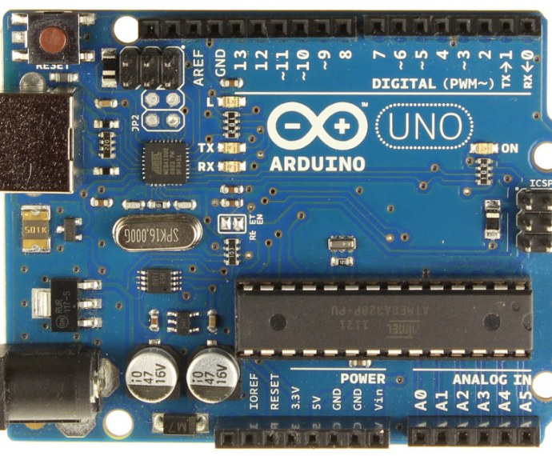
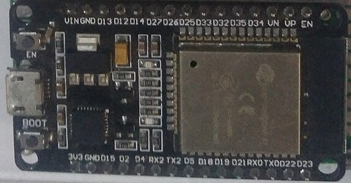
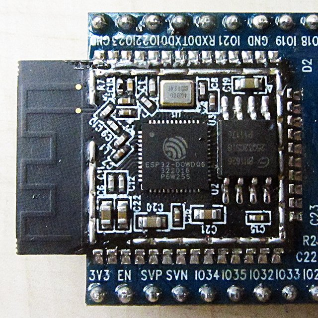

Aula 2 · Sistemas embarcados
Microcontroladores
e programação embarcada
Do silício ao código: como um microcontrolador funciona por dentro, o que oferecem o Arduino Uno e o ESP32 e como programá-los em C/C++.
Professor Doutor Roberto Cândido
→ ou espaço para avançar · G visão geral · F tela cheia
Microcontroladores e hardware
O que é um microcontrolador?
Um computador completo em um único chip: processador, memórias e periféricos de entrada e saída, pensado para controlar uma tarefa dedicada.
Microcontrolador (MCU)
Tudo integrado. Baixo custo e consumo, liga em milissegundos, roda sem sistema operacional.
Arduino · ESP32 · STM32Microprocessador (MPU)
Só a CPU: precisa de RAM, armazenamento e periféricos externos. Roda um sistema operacional.
PC · Raspberry PiMicrocontroladores e hardware
Arquitetura e funcionamento
Um sistema embarcado é um computador dedicado, embutido em um produto, que lê o ambiente, decide e age.
- Função específica: faz uma coisa, repetidamente, por anos.
- Restrições: pouca memória, energia limitada, custo baixo.
- Tempo real: responder dentro do prazo também faz parte da resposta correta.
- Arquitetura Harvard (AVR do Uno): memória de programa e de dados em barramentos separados.
Placas de desenvolvimento
Arduino Uno R3

Placas de desenvolvimento
ESP32 DevKit · ESP32‑WROOM‑32


Placas de desenvolvimento
Arduino Uno × ESP32
Qual placa para o projeto?
Microcontroladores e hardware
Pinos digitais e analógicos
Digital
Só dois estados: HIGH ou LOW. Como entrada lê botões e chaves; como saída liga LEDs e relés.
Analógico (ADC)
O conversor analógico-digital transforma uma tensão em um número. Quanto mais bits, mais fina a escala.
analogRead“Analógico” de saída (PWM)
Liga e desliga muito rápido; a média controla brilho e velocidade.
analogWrite · ledcWriteMicrocontroladores e hardware
Interfaces e periféricos
Periféricos são circuitos dedicados dentro do chip que trabalham em paralelo com a CPU: temporizadores, PWM, ADC e as interfaces de comunicação com sensores, displays e outros chips.
Peer Instruction · Pergunta 1 de 2
Sensor de 5 V no ESP32
Um sensor analógico do kit entrega de 0 a 5 V. Ele funcionava no Arduino Uno e agora foi ligado diretamente a um pino ADC do ESP32. O que acontece quando o sensor marca 5 V?
A leitura é 4095 e tudo funciona normalmente
A leitura é 1023, como no Uno
O pino pode ser danificado: é preciso reduzir a tensão antes
O ESP32 ajusta a escala automaticamente para 5 V
1º voto individual → discuta com um colega → 2º voto
Microcontroladores e hardware
Ler sensores, acionar atuadores
Programação para sistemas embarcados
Compilada × interpretada
Compilada · C/C++
O compilador traduz todo o programa para código de máquina antes de gravar. A placa só executa instruções nativas: rápido, compacto e previsível.
Arduino IDE · PlatformIO · ESP-IDFInterpretada · Python
Um interpretador na placa lê e executa o código linha a linha. Mais flexível e fácil de testar, porém mais lento e com mais consumo de memória.
MicroPython · CircuitPythonC é a base dos sistemas embarcados: acesso direto ao hardware e controle total da memória. C++ acrescenta classes, e é o que o Arduino usa.
Programação para sistemas embarcados
Tipos de dados e variáveis
| Tipo | Uno | ESP32 | Faixa (Uno) |
|---|---|---|---|
| bool | 1 byte | 1 byte | true / false |
| byte · uint8_t | 1 byte | 1 byte | 0 … 255 |
| char · int8_t | 1 byte | 1 byte | −128 … 127 |
| int | 2 bytes | 4 bytes | −32 768 … 32 767 |
| unsigned int | 2 bytes | 4 bytes | 0 … 65 535 |
| long | 4 bytes | 4 bytes | ±2,1 bilhões |
| float | 4 bytes | 4 bytes | ~7 dígitos |
| double | 4 bytes | 8 bytes | ~7 dígitos no Uno |
uint8_t, int16_t, uint32_t) e const para valores que não mudam.Programação para sistemas embarcados
Operações com bits
Registradores de hardware são conjuntos de bits. No Uno, cada bit do registrador PORTB controla um pino: o bit 5 é o pino 13.
x |= (1 << n)liga o bit nx &= ~(1 << n)desliga o bit nx ^= (1 << n)inverte o bit n(x >> n) & 1lê o bit n
O Arduino oferece atalhos: bitSet, bitClear, bitRead. Escrever direto no registrador é muito mais rápido que digitalWrite.
Peer Instruction · Pergunta 2 de 2
Um a mais
Este código roda em um Arduino Uno. O que aparece no Monitor Serial?
int x = 32767;x = x + 1;Serial.println(x);
32768
−32768
0
Erro de compilação
1º voto individual → discuta com um colega → 2º voto
int tem 16 bits em complemento de dois. 32767 é 0111…1; somar 1 dá 1000…0, que é −32768 (estouro). O compilador não avisa. No ESP32, onde int tem 32 bits, o resultado seria 32768.Programação para sistemas embarcados
Condicionais e repetição
Programação para sistemas embarcados
Funções e organização do código
- Uma função tem nome, parâmetros e um tipo de retorno (
voidquando não devolve nada). - Cada chamada cria um quadro na pilha com as variáveis locais; ao retornar, ele é descartado.
- Uma função, uma responsabilidade. Nomes que dizem o que ela faz.
- Projetos maiores se dividem em arquivos
.h(declarações) e.cpp(implementação).
estacao/ ├─ estacao.ino // setup() e loop() ├─ config.h // pinos e constantes ├─ sensores.h // float lerTemperatura(); └─ sensores.cpp // implementação
Programação para sistemas embarcados
Orientação a objetos em C++
class Led { private: // atributos: só a classe mexe int pino; bool aceso = false; public: // métodos: a interface Led(int p) { pino = p; pinMode(pino, OUTPUT); } void ligar() { aceso = true; digitalWrite(pino, HIGH); } void desligar() { aceso = false; digitalWrite(pino, LOW); } void alternar() { aceso ? desligar() : ligar(); }};
- Classe é o molde; objeto é cada LED criado a partir dela.
- Encapsulamento: o pino fica
private; quem usa só chama métodos. - Você já usa objetos:
Serial,Servo,WiFi.
Programação de E/S
Entradas e saídas digitais
pinMode(pino, OUTPUT)edigitalWritepara saídas.INPUT_PULLUPliga um resistor interno ao VCC: o botão vai ao GND e a lógica fica invertida (solto = HIGH, apertado = LOW).- Sem pull-up ou pull-down, a entrada fica flutuando e lê ruído.
- Contatos mecânicos trepidam (bounce) por alguns milissegundos: um aperto vira várias bordas.
Linha menta: sinal bruto do pino · laranja: estado aceito pelo programa · trepidação exagerada para ficar visível.
Programação de E/S
Temporização e interrupções
Programação de E/S
Leitura de sensores no tempo
- Amostrar em intervalo fixo com
millis(), sem travar o programa. - Leituras reais têm ruído. A média móvel das últimas N amostras suaviza o sinal.
- Janela grande = sinal liso, mas com atraso: o sistema demora a perceber mudanças.